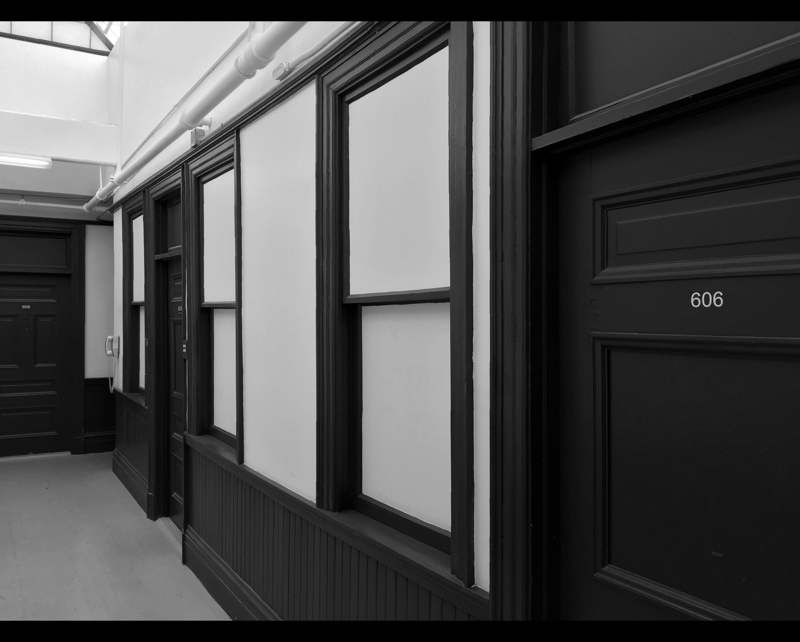
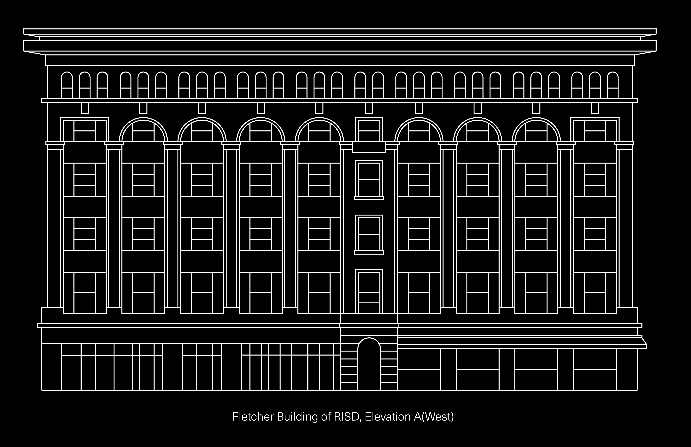
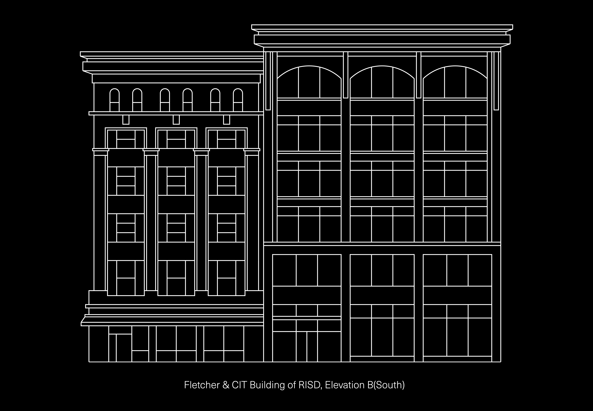

The Fletcher building began its new life in late 1998 as studios for graduate students at RISD. Each of the six floors has studios for painting, printmaking and sculpture with shared wood shops and critique space. New media and design students use the adjacent Mason building – the Center for Integrative Technologies – by accessing it through new connecting stairwells between the buildings.

While the interior renovations went quickly, and reused the old doors and windows that looked into the hallways, the exterior remodelling took more time, and was completed in late 2004. Ground floor retail again occupies the space, with Gourmet Heaven, which opened in 2009 and a selection of bars along Union Street.
George Waterman Cady(1825 – 1906), original architect.
Built 1895 – 1903. Redeveloped 1998 – 2004.

Fletcher building (ca.1895; 1903): George Waterman Cady, architect; 5-story, brick-sheathed, steel-frame structure with mid-century storefronts; main entrance in quoined pavillion on Union Street; 5-bay facade of pier and recessed spandrel system with Chicago window infill second through fifth stories culminating with panels and cartouches above which are simple rectagular windows and round headed windows on top floor. Built as an office structure in the late 1890s, the Fletcher building was extensively remodeled in 1903 when the top three stories were added. It continues to function as an office building.
The Fletcher Building and CIT(Center for Integrative Technologies), former John Mason building.

These two buildings are part of RISD’s expansion into downtown. The former Hospital Trust building was be renovated for student housing and the newly expanded RISD library, and an ambitious new Student Center will break ground soon on South Main Street.
Manager: Alfred Chin
E-mail: achin@risd.edu
Phone: +1.401.454.6784